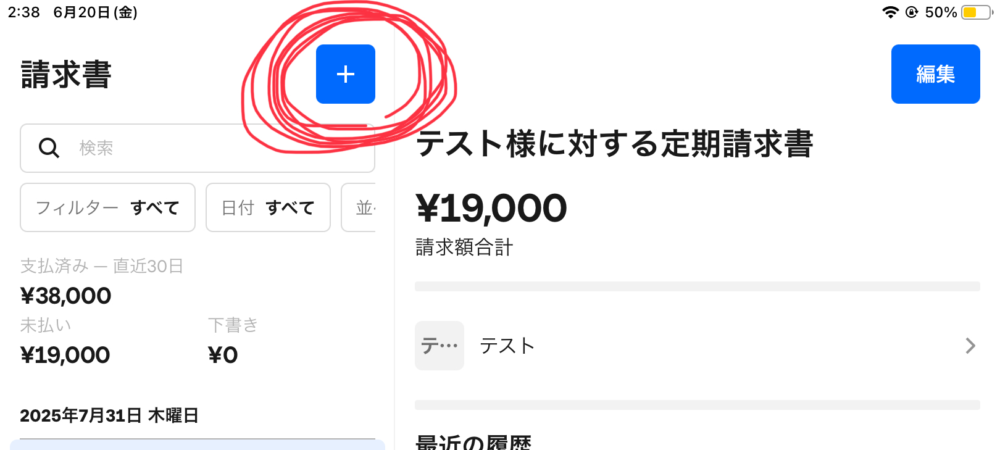
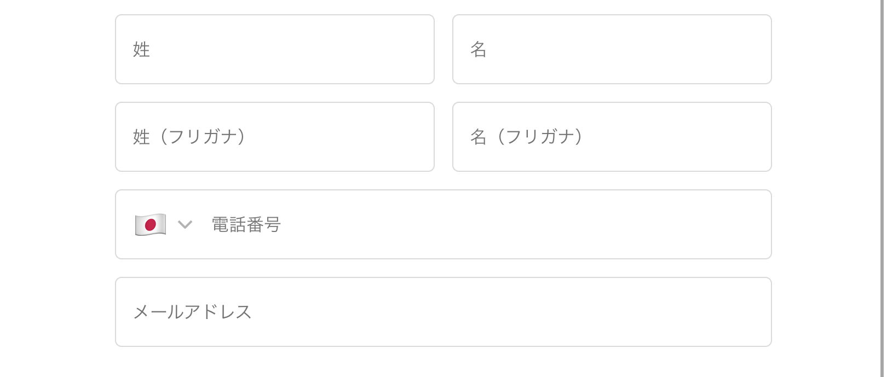
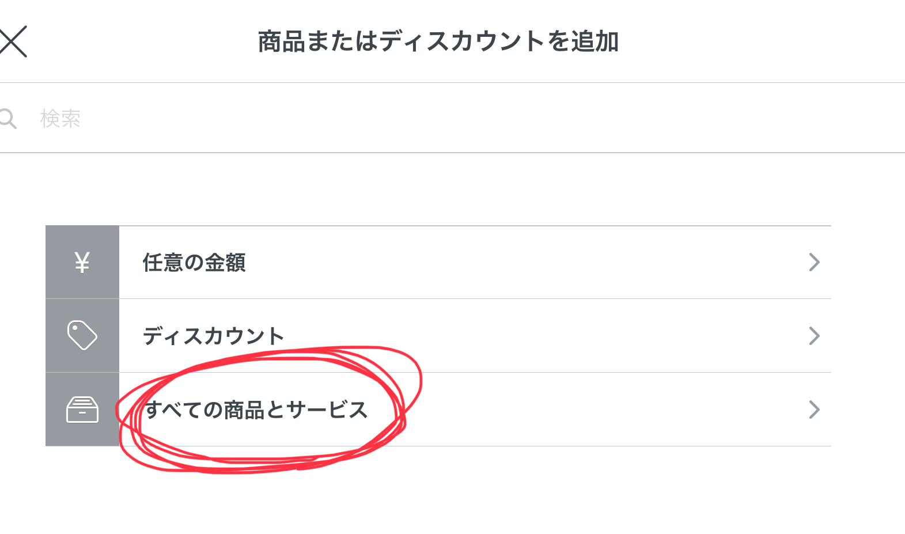

📋 目次
1
請求書タブに移動
2
新規請求書作成
3
顧客情報を追加
4
商品・サービス選択
5
定期送信設定
6
開始日・提供日設定
7
件名・メッセージ設定
8
プレビュー確認・送信
9
お客様画面・支払い完了後
⚠️
緊急時対応・解約処理
📱 Step 1: 請求書タブに移動

1
アプリを開くと最初は「お会計」タブにいます
2
下部メニューの「請求書」をタップ
➕ Step 2: 新規請求書作成
1
画面左上の青い「＋」ボタンをタップ
2
新規請求書画面が表示される
👤 Step 3: 顧客情報を追加

1
「顧客情報を追加」をタップ
2
右上の「顧客情報を作成」をタップ
3
お客様の姓名を入力
4
電話番号を入力
5
メールアドレスを正確に入力
6
「保存」をタップ

1
「商品またはディスカウントを追加」をタップ
2
「すべての商品とサービス」から該当するサブスクリプションを選ぶ